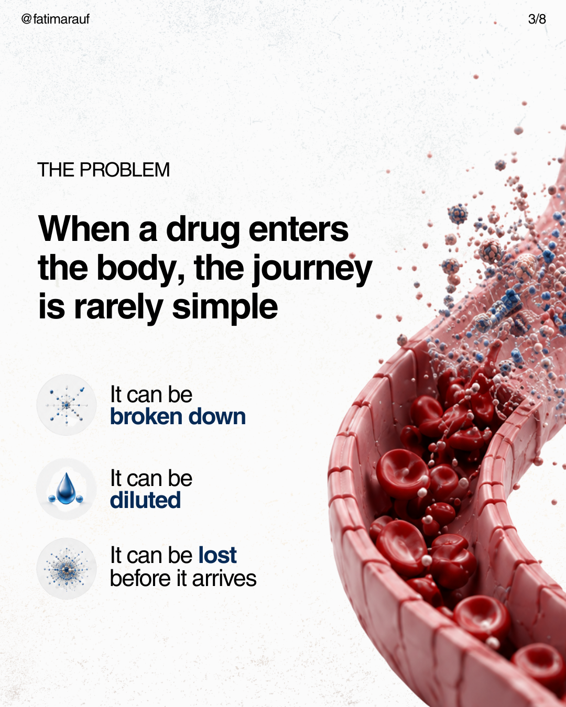
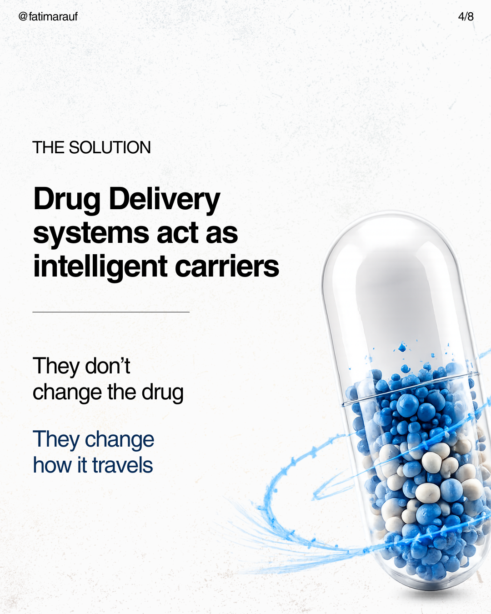
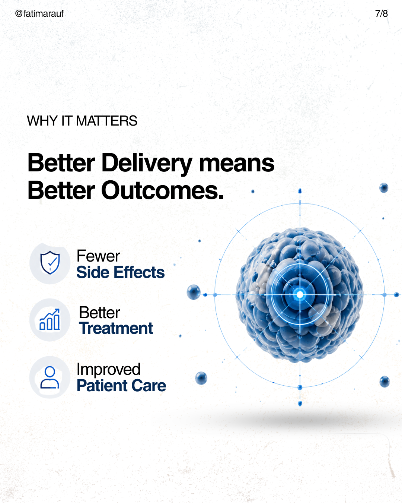
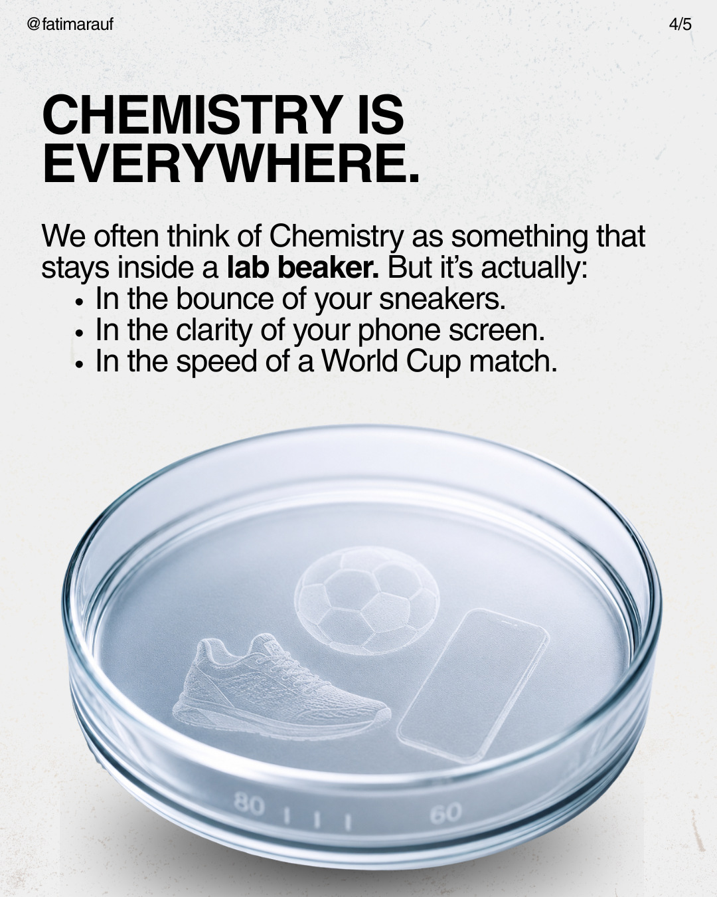

PROJECT / 2026
Science,
Made Visual
Scientific storytelling through editorial design, visual systems and research communication.

Making science
easier to see.
I use visual communication to translate scientific ideas into work that feels clear, engaging and memorable without stripping away the science behind them. This selection moves from drug-delivery education and materials chemistry to a sensor-integrated wound-dressing concept.
01 / DRUG DELIVERY
Explaining targeted treatment through a visual narrative.






02 / MATERIALS CHEMISTRY
Finding the chemistry inside something familiar.



03 / RESEARCH COMMUNICATION
From research concept to visual system.


← BACK TO WORKFATIMA RAUF / PORTFOLIO